Client dossiers
Complete per-client history — purchases, preferences, and context that make follow-ups feel personal.
A lightweight, self-hosted customer relationship management tool for retail clienteling: client dossiers, promo-watch matching against a model catalog, follow-up management, outreach analytics, and role-gated approvals — built for product categories where inventory is organized by model number and collection. One Node process, one SQLite database, zero external services.
Two minutes, end to end — clients, promos, follow-ups, and analytics.
Every screen ships in both themes — the toggle lives in the top bar, and the choice persists per user.
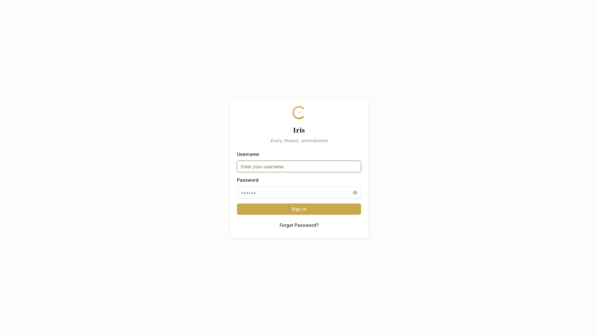
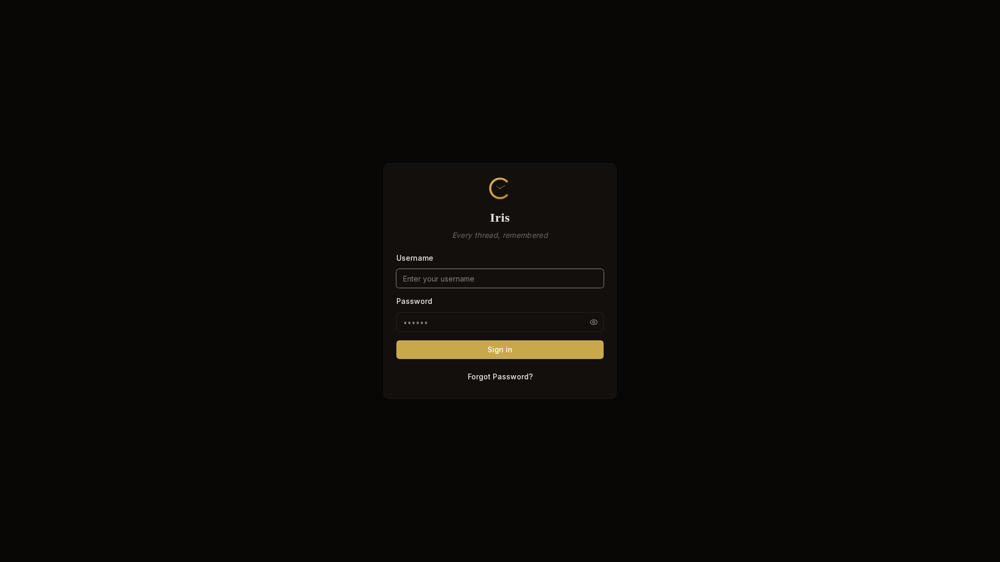
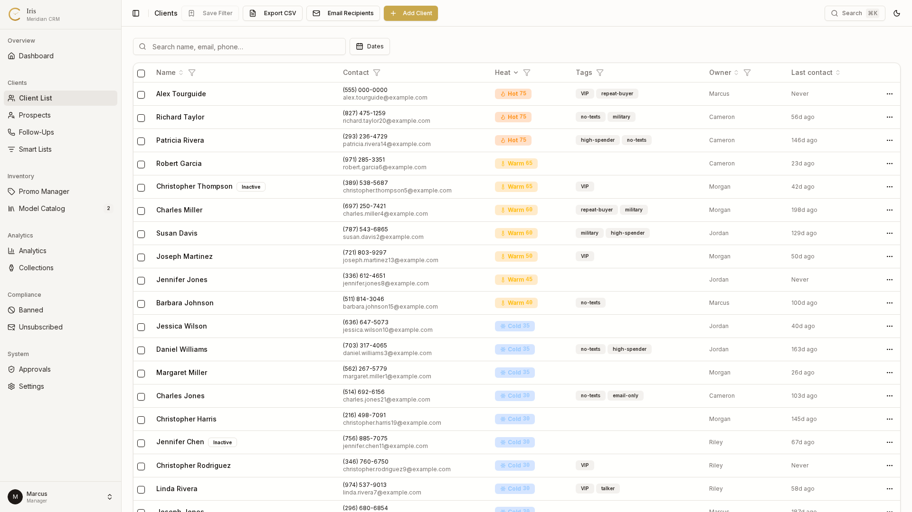
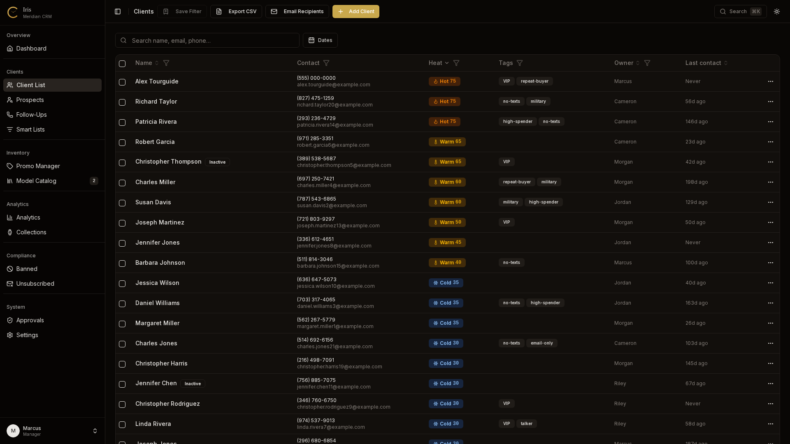
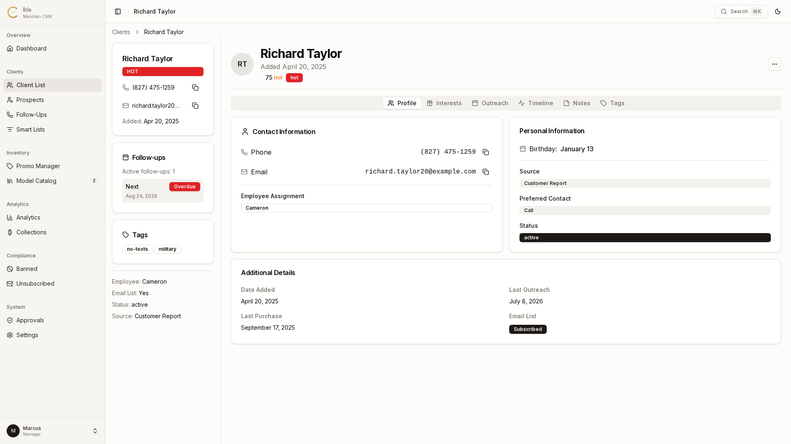
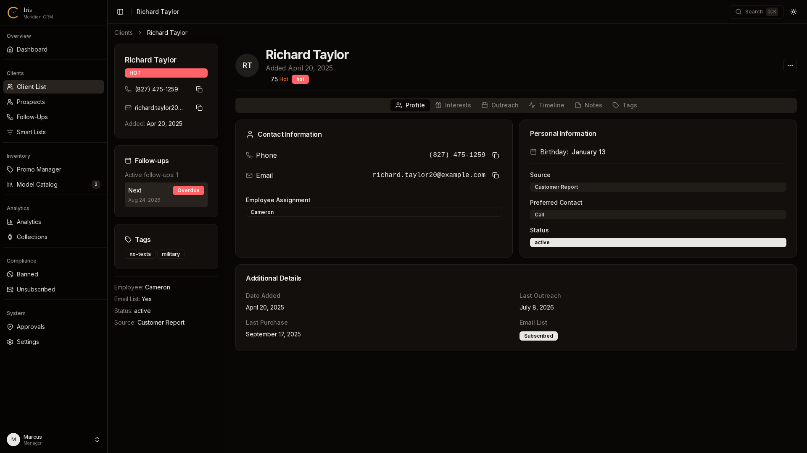
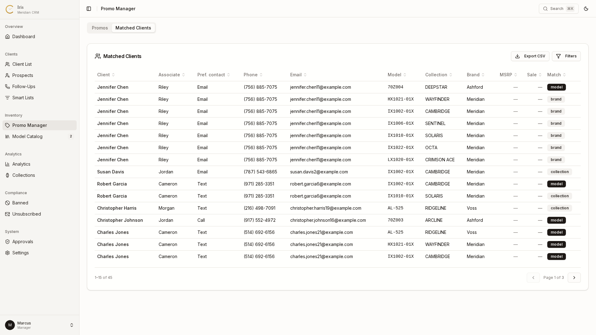
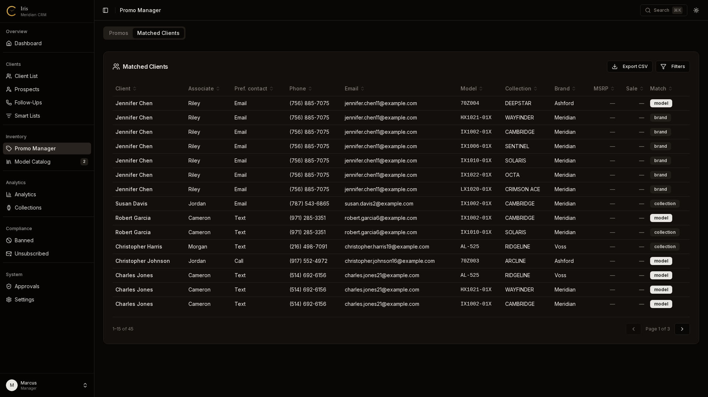
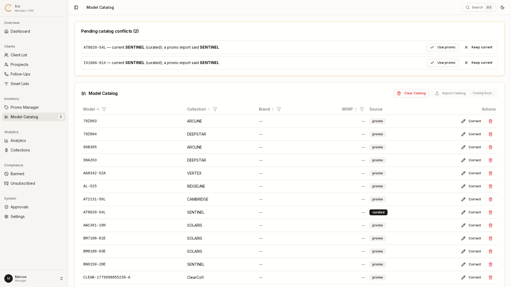
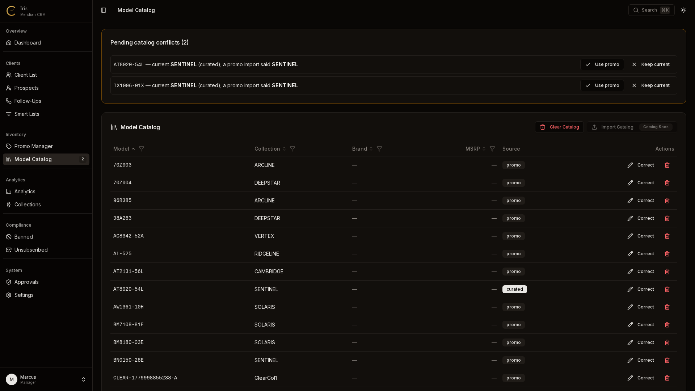
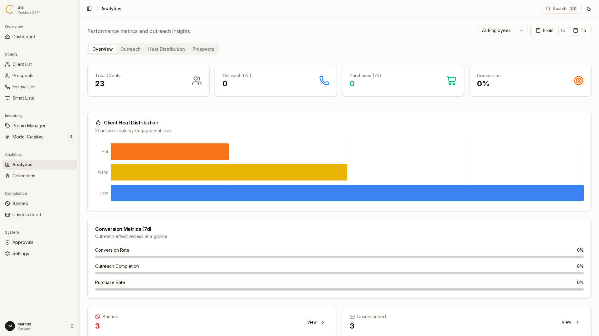
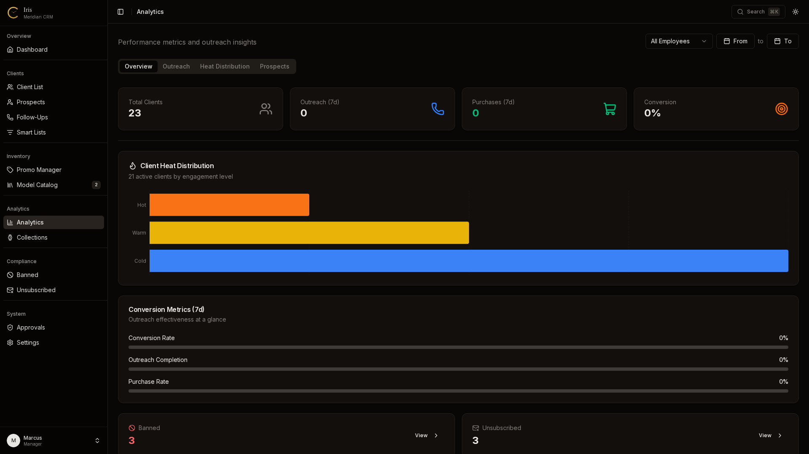
Complete per-client history — purchases, preferences, and context that make follow-ups feel personal.
Automatically match promos against the model catalog so the right offer finds the right client.
Structured outreach logging and smart lists keep every follow-up on time and in context.
Outreach and sales analytics that show what's working — surfaces and trends at a glance.
Manager and associate roles with server-action gating; destructive actions flow through an approval queue.
One Node process, one SQLite file, zero SaaS in the loop. Backup and restore are a download and an upload.
Every surface ships in both themes, with a top-bar toggle and a per-user persisting preference.
Navigate the whole app by keyboard — jump to clients, promos, prospects, or settings in a keystroke.